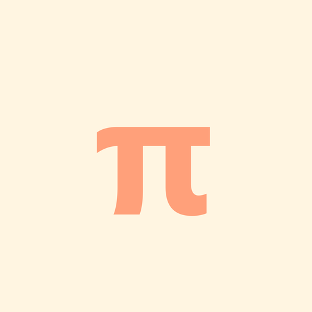

MathLan · 数学好玩
开发者微信:mathlan3
请从上方选择题目查看答案
双指捏合缩放 · 单指拖动 · 按钮缩放旋转 · 点击空白关闭
1. 点「用户ID」输入用户编号（1-30）2. 点 A1-C3 选择题库开始答题3. 选择答案后点「提交」确认；不选答案直接提交可查看答案图片
绿色 ✓：该题库已全部答对红色 ?：最近答题有错误默认色：未完成
· 查看：按题库浏览答错的题目与答案图，可删除错误记录· 统计/单统计：输入并查看某位用户的详细统计· 多统计：所有用户、所有题库的正确率与用时概览· 更新：刷新到最新版本· 批注：题目/答案图片下方出现 ▶ 按钮时，点击可听音频批注、看批注视频/图片· 图片放大：点击图片后可用按钮缩放、旋转· 应用/音频/视频：请在电脑端使用
答题进度保存在本机，卸载或清除数据前请注意。
开发者微信：mathlan3